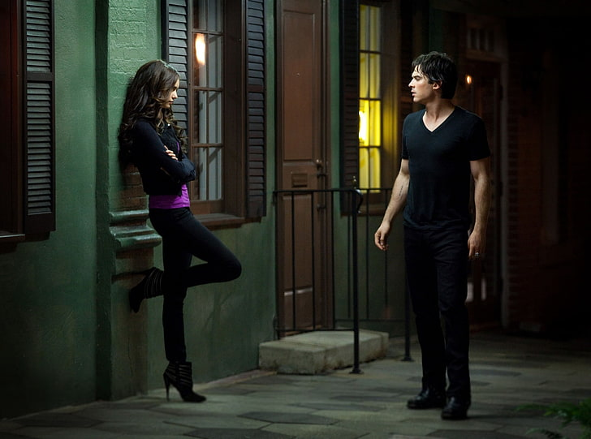

Immerse yourself in the captivating world of The Vampire Diaries, a television series that weaves an irresistible tapestry of love, drama, and supernatural intrigue. Set in the enigmatic town of Mystic Falls, the show follows the lives of two vampire brothers, Stefan and Damon Salvatore, as they grapple with their immortal existence and the eternal consequences it entails.
Step into a world where the boundaries between good and evil blur, and where the complexities of relationships are tested to their limits. The Vampire Diaries delves deep into the themes of redemption, sacrifice, and the eternal struggle between one's darkest impulses and the yearning for redemption.
Witness the magnetic chemistry between the Salvatore brothers as they vie for the affections of Elena Gilbert, a captivating young woman who becomes entangled in their supernatural world. Alongside Elena, a strong-willed and compassionate protagonist, a cast of compelling characters unfolds, including powerful witches, werewolves, and other supernatural beings, all with their own secrets and hidden agendas.
Throughout its gripping storyline, The Vampire Diaries explores the intricate dynamics of love, friendship, and loyalty, often tested by the supernatural forces that threaten to tear Mystic Falls apart. From heart-stopping action sequences to heart-wrenching emotional moments, the show never fails to keep viewers enthralled and guessing.
As you delve deeper into The Vampire Diaries, you'll find yourself irresistibly drawn to its intricately crafted plot twists, unexpected alliances, and profound character development. Experience the relentless battles between good and evil, the delicate dance of romance, and the exploration of the darkness that lurks within each character.
Prepare to be enchanted by the spellbinding performances, the hauntingly beautiful soundtrack, and the visually stunning cinematography that bring the world of The Vampire Diaries to life. Each episode will leave you craving for more as you become immersed in a tale that seamlessly blends fantasy, romance, and thrilling suspense.
Join us as we unravel the mysteries, unravel the secrets, and embark on an unforgettable journey into the captivating realm of The Vampire Diaries. Brace yourself for an addictive and exhilarating television experience that will leave you thirsting for more.
CAST
1. Stefan Salvatore
2. Damon Salvatore
3. Elena Gilbert / Katherine Pierce
4. Bonnie Bennett
5. Caroline Forbes
6. Matt Donovan
7. Tyler Lockwood
8. Jeremy Gilbert
9. Klaus Mikaelson
10. Elijah Mikaelson
StoryLine
The Vampire Diaries follows the life of Elena Gilbert, a young high school student, as she becomes entangled in the supernatural world of Mystic Falls. The story begins when Elena meets Stefan Salvatore, a mysterious and compassionate vampire with a dark past. They quickly form a deep connection and begin a tumultuous relationship.
However, Stefan's volatile and unpredictable brother, Damon Salvatore, also sets his sights on Elena, creating a love triangle that spans the series. As Elena navigates her feelings for both brothers, she also becomes enmeshed in the supernatural conflicts that plague Mystic Falls.
The town is home to various supernatural beings, including witches, werewolves, and other vampires, each with their own agendas and vendettas. Elena's friends, Bonnie Bennett and Caroline Forbes, also discover their own magical abilities, further deepening the supernatural presence in their lives.
Throughout the series, Mystic Falls becomes a battleground for supernatural forces, with ancient curses, powerful artifacts, and long-standing feuds coming to the forefront. Elena and her friends must confront countless challenges, face dangerous enemies, and make heartbreaking sacrifices to protect their town and their loved ones.
The Vampire Diaries delves into themes of love, friendship, family, and the struggle between good and evil. As the characters grapple with their own inner demons and navigate complex relationships, they uncover long-held secrets, face tragic losses, and discover the depths of their own strength.
The series also introduces the Original vampires, a powerful and ancient family led by Klaus Mikaelson. Their presence adds another layer of mythology and complexity to the story, as they seek to regain power and unleash their own dark agendas.
With each season, The Vampire Diaries presents a new set of challenges and adversaries, as well as emotional journeys for the characters. The story weaves together romance, supernatural intrigue, and high-stakes drama to create an addictive and captivating narrative that keeps viewers hooked until the very end.
Sensational Duos
1. Stefan And Damon ( Salvatore Brothers )
Stefan and Damon Salvatore, the charismatic vampire brothers in The Vampire Diaries, share a complex and captivating chemistry. Stefan, with his brooding and compassionate nature, contrasts with Damon's impulsive and volatile personality. Their intense rivalry over love interests, including the captivating Elena Gilbert, ignites a powerful dynamic filled with tension, love, and betrayal. Their contrasting personalities and deep bond create a captivating and compelling dynamic that drives the heart of the series.
2. Klaus And Eliajah ( THE ORIGINALS )
Klaus and Elijah Mikaelson, the magnetic and mesmerizing Original vampires in The Vampire Diaries, ignite the screen with their fiery chemistry. Klaus, the embodiment of dark allure and untamed power, clashes with Elijah's refined elegance and unwavering loyalty. Their complex bond teeters on a knife's edge, fueled by sibling rivalry, power struggles, and a shared history drenched in secrets. Brace yourself for a tumultuous ride as these charismatic siblings captivate with their enigmatic presence, leaving a trail of chaos, passion, and undeniable charm in their wake. Welcome to the irresistible world of Klaus and Elijah in The Vampire Diaries, where power collides, loyalties shatter, and the allure of darkness beckons.
3. Bonnie And Damon
Enter the electrifying duo of Bonnie and Damon in The Vampire Diaries, where sparks fly amidst a tempestuous alliance. Bonnie, the fiercely determined witch with an unwavering moral compass, finds an unexpected connection with Damon, the charismatic and unpredictable vampire. Their fiery dynamic sizzles with tension, as they navigate a rollercoaster of trust, reluctant camaraderie, and scorching chemistry. Brace yourself for a spellbinding dance of darkness and redemption as Bonnie and Damon ignite the screen with their captivating partnership, where passion and danger intertwine in the most enticing ways.
Love Stories
1. Stefan And Elena
The intoxicating chemistry between Stefan and Elena in The Vampire Diaries is undeniable. Stefan, with his brooding charm and compassionate nature, captivates Elena's heart in a whirlwind of love and longing. Their magnetic connection transcends the boundaries of the supernatural world, weaving a passionate and tumultuous romance filled with sacrifices, challenges, and an unbreakable bond. Brace yourself for a love story that ignites the screen, where Stefan and Elena's chemistry sparks a flame that burns with intensity and forever alters their lives.
2. Damon And Elena

Damon and Elena in The Vampire Diaries create an irresistible and tumultuous love story. Damon, with his charismatic and unpredictable nature, finds a deep and profound connection with Elena, the compassionate and resilient young woman. Their passionate and often turbulent relationship defies conventions, as they navigate a rollercoaster of emotions, sacrifices, and profound growth. Brace yourself for a love that transcends boundaries, where Damon and Elena's undeniable chemistry captivates hearts and leaves an indelible mark on the series.
3. Stefan And Caroline
The relationship between Stefan and Caroline in The Vampire Diaries blossoms into a heartwarming and transformative journey. Starting as friends, their connection evolves into a deep and unbreakable bond. Stefan's gentle nature complements Caroline's growth from a self-centered teenager to a fiercely loyal vampire. Together, they navigate challenges, offer unwavering support, and discover the true meaning of love and acceptance. Brace yourself for a captivating tale of friendship-turned-romance, where Stefan and Caroline's relationship radiates with warmth, growth, and a love that withstands the test of time.
4. Caroline And Klaus
The dynamic between Klaus and Caroline in The Vampire Diaries is a captivating mix of attraction, tension, and unexpected tenderness. Klaus, the powerful and enigmatic hybrid, finds himself drawn to Caroline's strength and compassion. Their complex relationship dances on the line between enemies and allies, as they navigate a tumultuous journey of power struggles and undeniable chemistry. Brace yourself for a spellbinding connection that defies expectations, where Klaus and Caroline's bond reveals layers of vulnerability and unexpected emotions that leave a lasting impact.